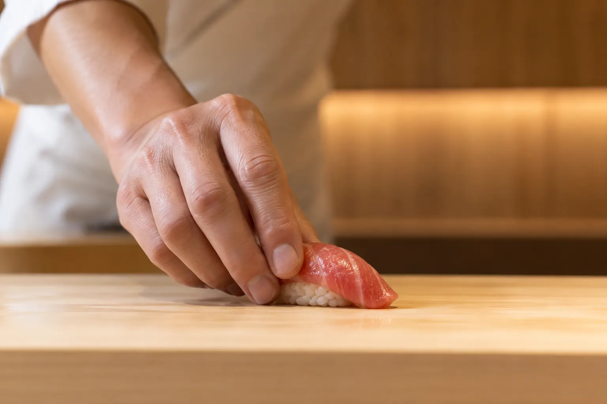
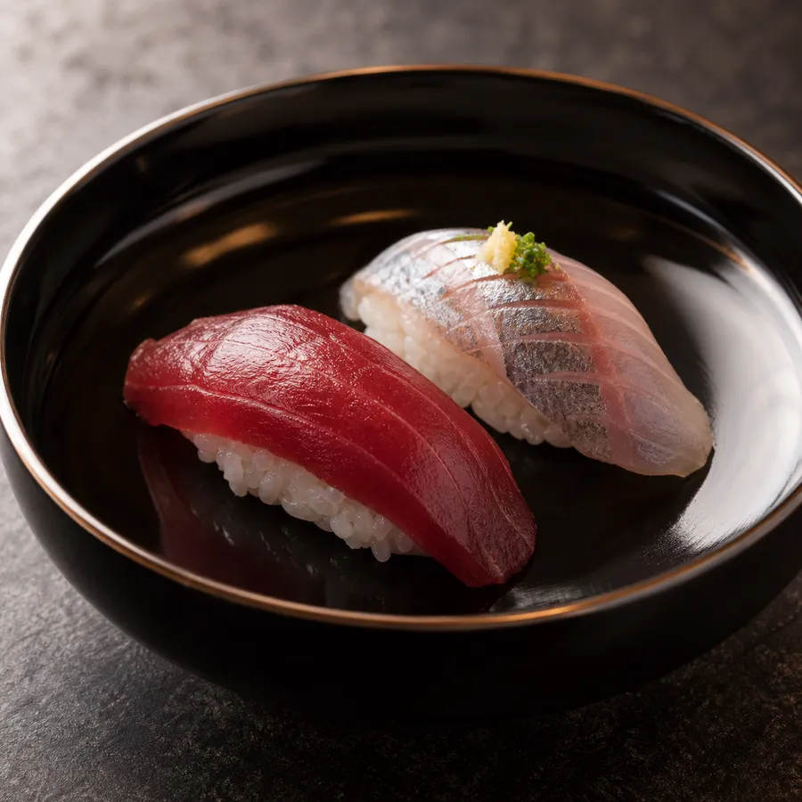
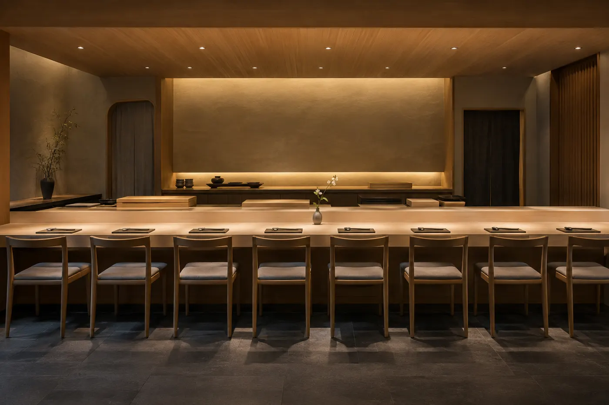
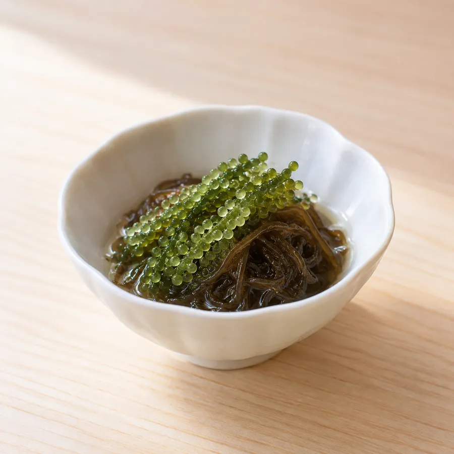

The season's fish, in the Edomae tradition.
Reservations only ・ Edomae sushi
Seasonal fish from Toyosu each morning, prepared piece by piece in the Edomae style. An eight-seat counter serving omakase only.
Concept
Every morning we go to Toyosu Market and buy only the day's best fish — rich red tuna, fatty shima-aji, seasonal kohada. Classic Edomae techniques such as kelp curing and soy marinating bring out each fish's character.
Our rice is seasoned with a blend of red and rice vinegars and served at a temperature matched to each topping. Drinks center on sake, chosen to accompany the nigiri.
Owner-chef, Sushi Rurishio

Menu
Prices include tax, per person. Drinks are charged separately.
Interior
Every piece is served the moment it is made. Ideal for celebrations and business dinners.


Information
Reservations
Reservations only. Book by phone, LINE or online.